all transients in sector04 (41 total)
Each figure has three panels. The top panel shows the transient light curve, the middle panel shows the local background (estimated in an annulus), and the bottom panel shows a "background-model corrected" light curve. Details about the background model are in the README.
The vertical red line marks the time of discovery reported to TNS. Other useful metadata from TNS is in the figure title.
Note that the top and bottom panel are in magnitudes, while the middle panel is in differential flux units. The magnitudes are calibrated to the flux in the reference image used for image subtraction. Thus, flux from the host galaxy is included in these magnitudes.
3-sigma upper limits are plotted as triangles with no errorbars. A typical limiting magnitude is 19.6 in 30 minutes or 18.4 in 200 seconds (for low backgrounds).
The links allow you to download the light curve data as a text file.
More details in the README.
2018jbn
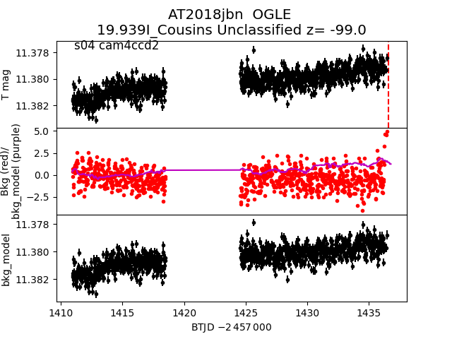
2018hss_detrended
2018hss
2018hyx
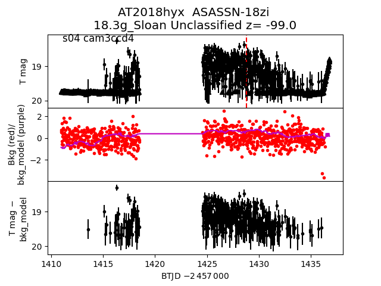
2018hum
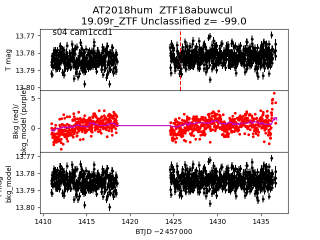
2018ien
 2018iuj
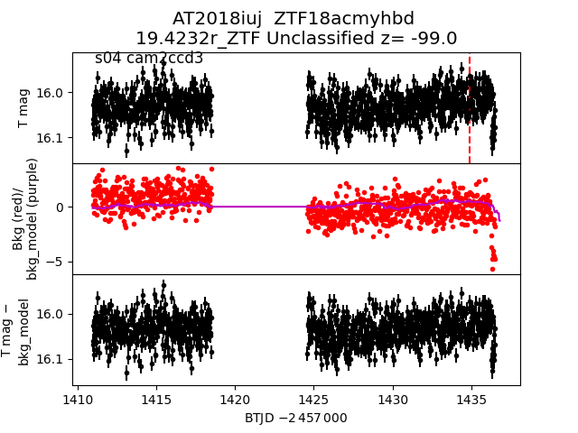
2018hoc
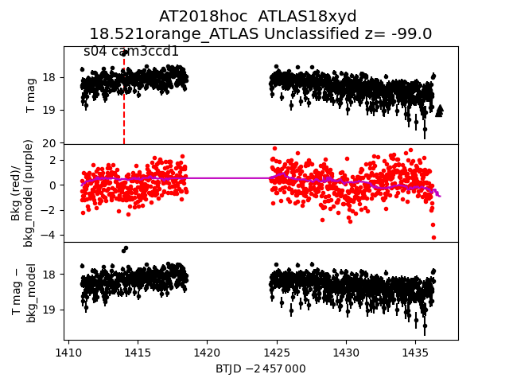
2018hpj
2018iuj
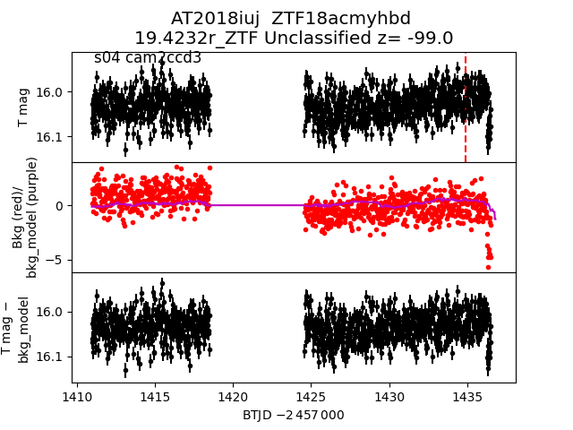
2018hoc
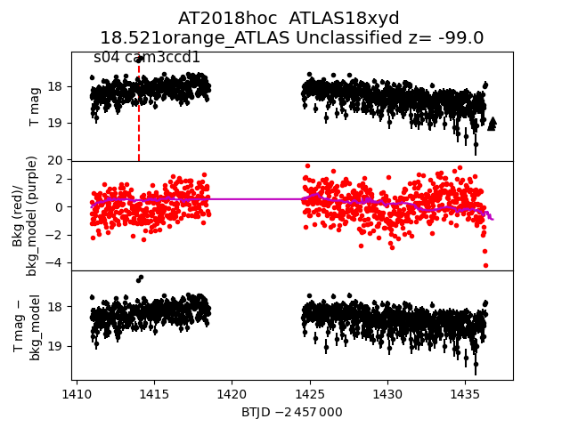
2018hpj
 2018ihq
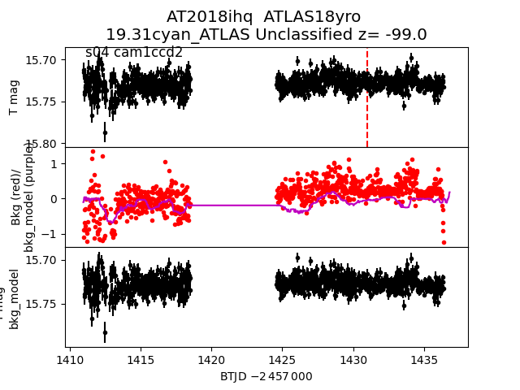
2018iwg
2018ihq
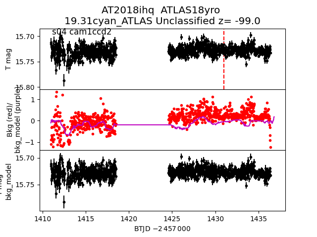
2018iwg
 2018hql
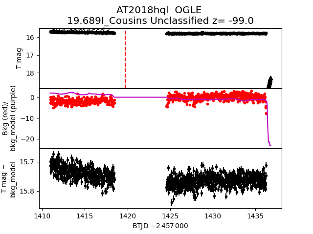
2018iin
2018hql
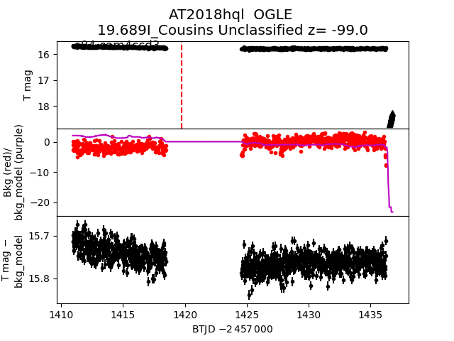
2018iin
 2018iti
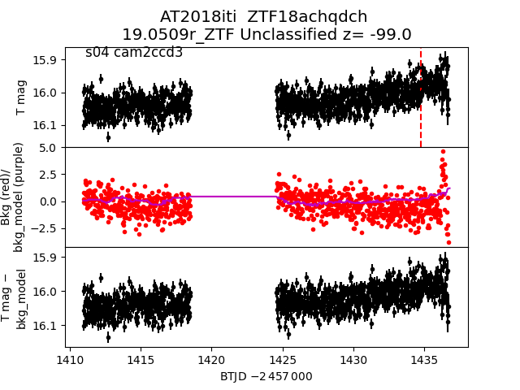
2018hsq
2018iti
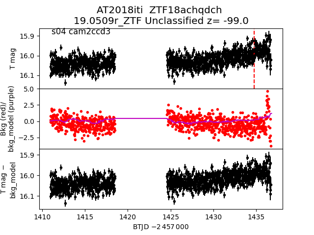
2018hsq
 2018iht
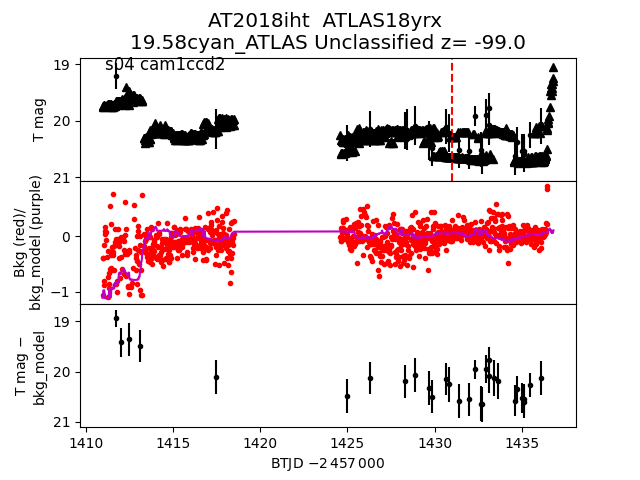
2018ime
2018iht
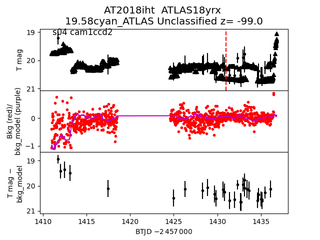
2018ime
 2018hps
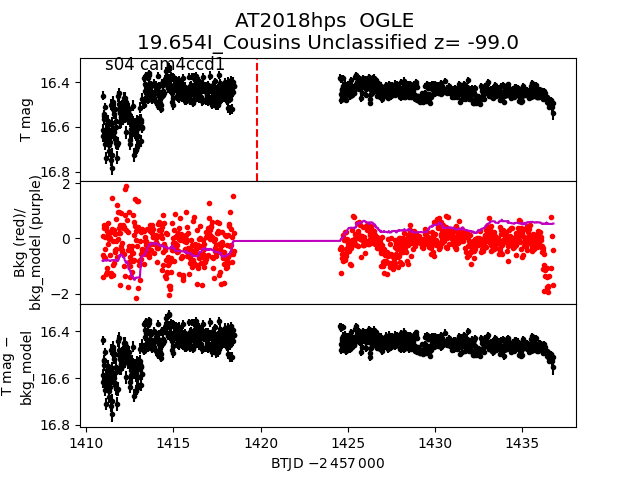
2018hzh
2018hps
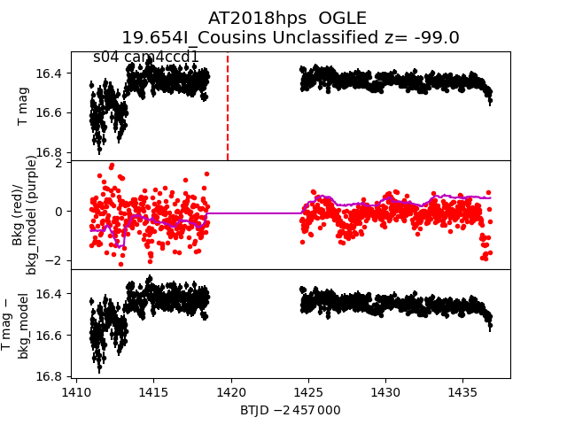
2018hzh
 2018ifm
2018ifm
 2018hnq
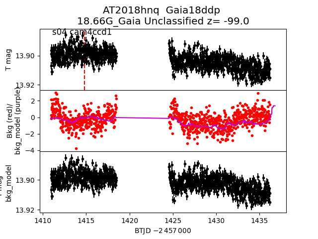
2018jco
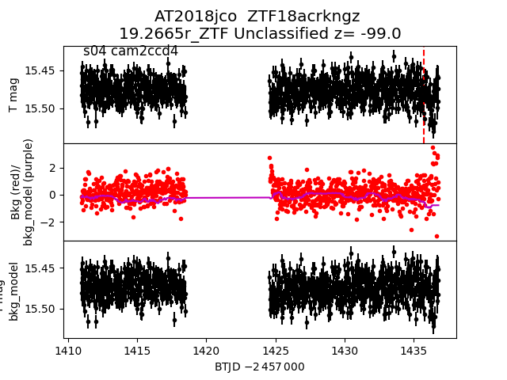
2018hrs
2018hnq
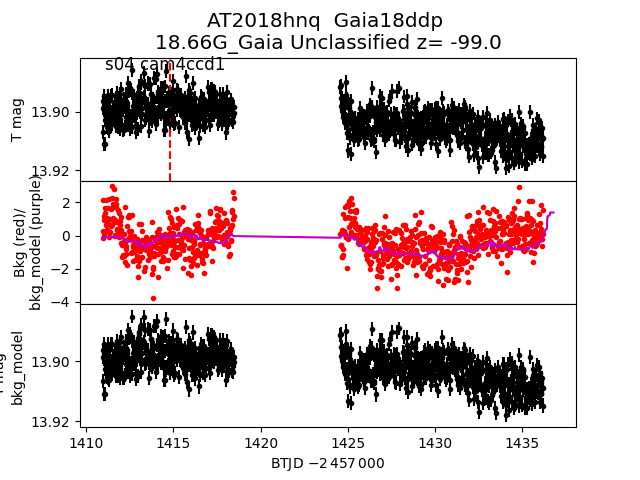
2018jco
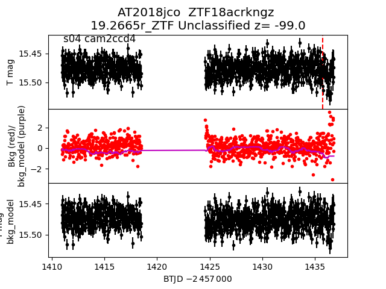
2018hrs
 2018iwl
2018iwl
 2018hsz
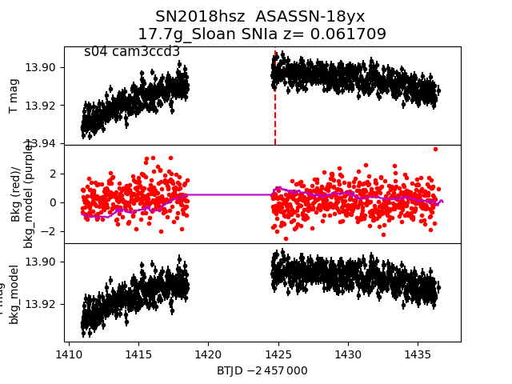
2018iyh
2018hsz
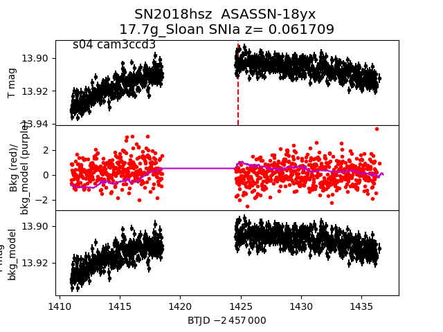
2018iyh
 2018hyy
2018hyy
 2018ifa
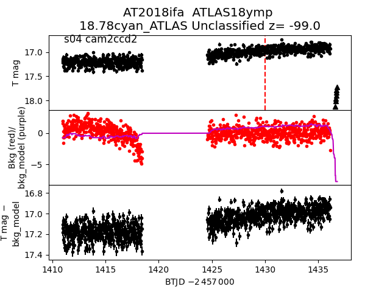
2018hte
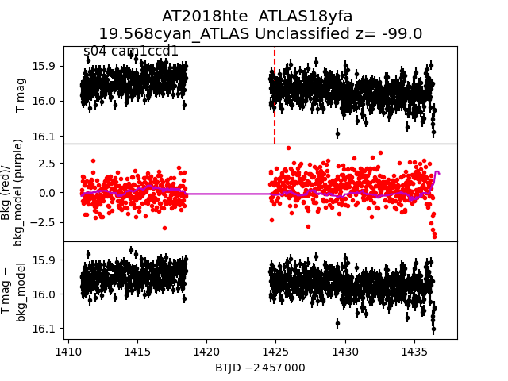
2018ijn
2018ifa
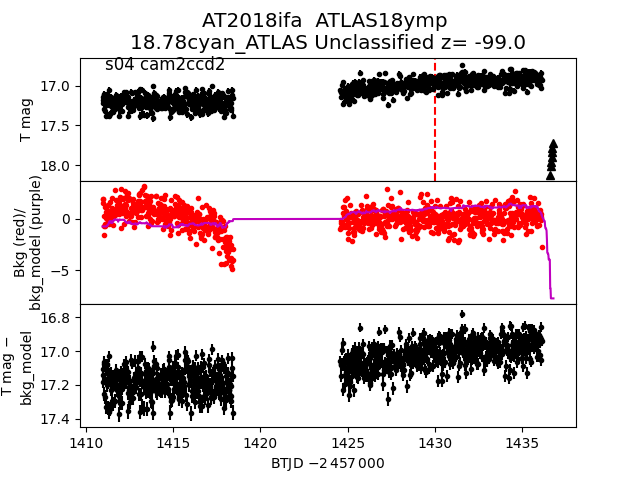
2018hte
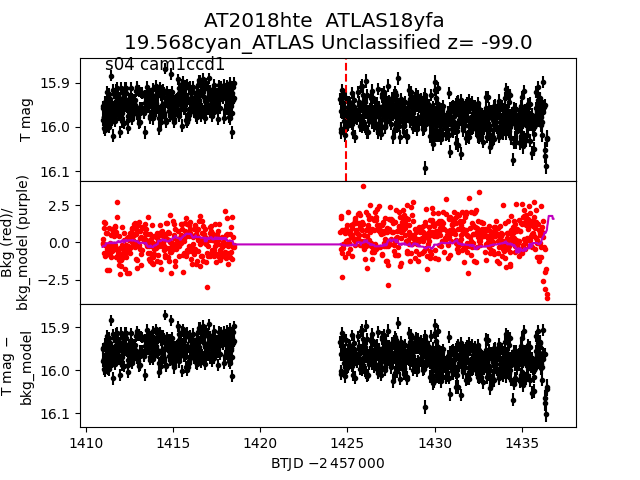
2018ijn
 2018hss
2018hss
 2018ifh
2018ifh
 2018ieu
2018ieu
 2018ift
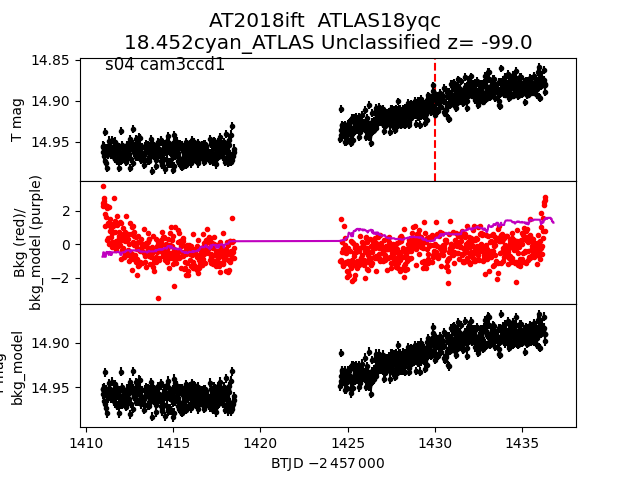
2018huc
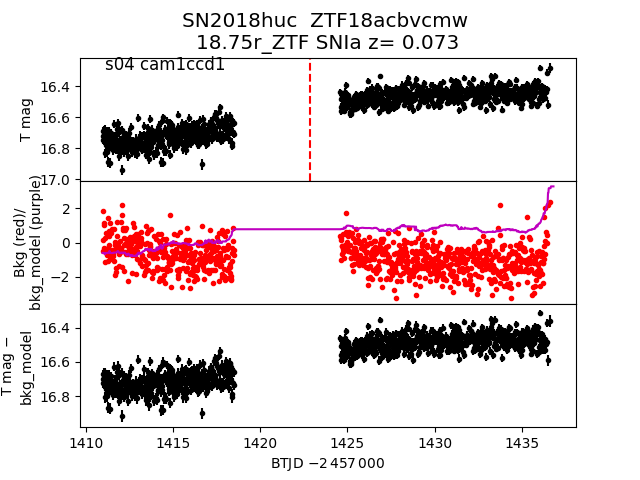
2018hsf
2018ift
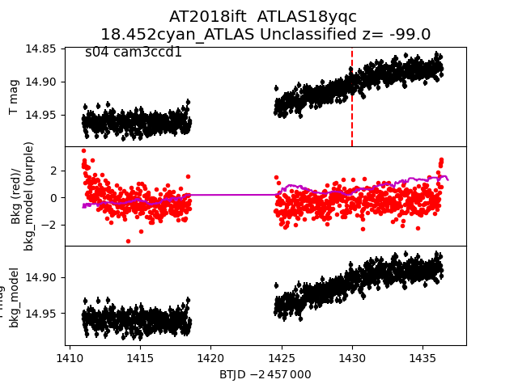
2018huc
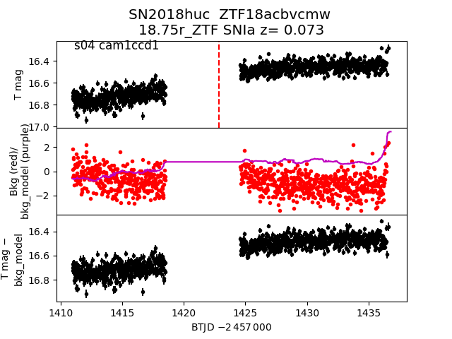
2018hsf
 2018hpd
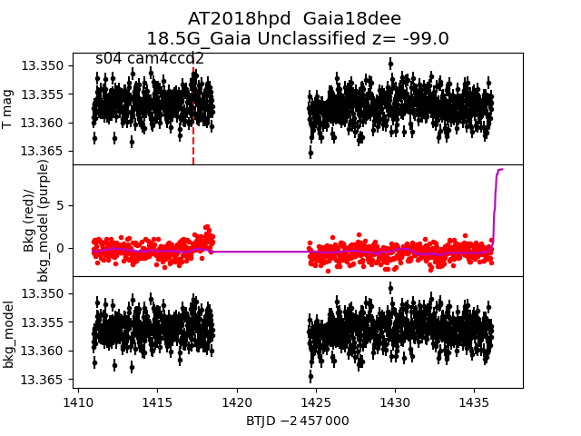
2018iez
2018hpd
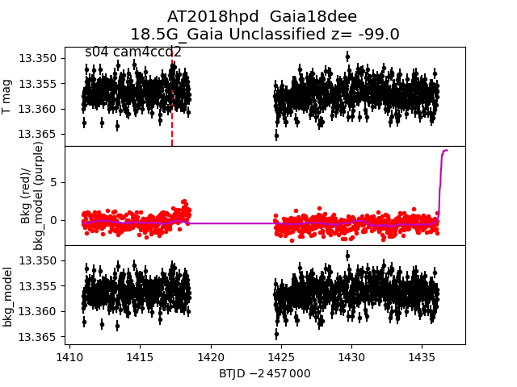
2018iez
 2018ihp
2018ihp
 2018jfk
2018jfk
 2018hmo
2018hmo